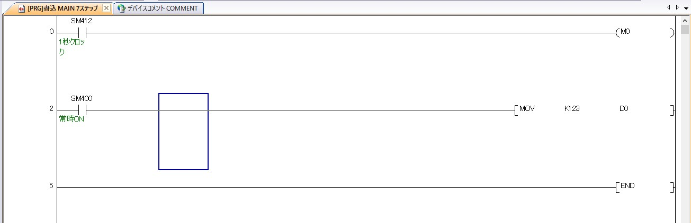
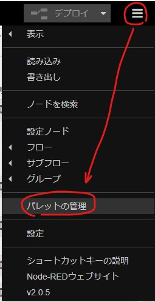
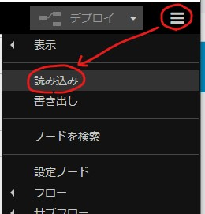

Node-REDとPLC(三菱)との連携を試します。
「PLC」の設定(その1) -> 「Node-RED」の設定(その2)という順番で説明していますが、本ページは「その2」です。
ちなみに、「その1」で作成したラダーは以下の通りです。

「Node-RED」の設定
「mcprotocol」モジュールと「dashboard」モジュールをインストールします。以下のように、「パレットの管理」を開きます。

「ノードを追加」タブ -> 検索用のボックスに「mcprotocol」と「dashboad」を各々入力し、「node-red-contrib-mcprotocol」と「node-red-dashboard」を追加します。

以下のようにノードを配置します。

- 「inject」ノード
- ・ 繰り返しトリガーをかけます。
- ・ 「Node-RED起動の0.1秒後、以下を行う」で、「指定した時間間隔 0.1秒」で設定します。
- 「text」ノード
- ・ 新規に「ui_group」と「ui_tab」を作成します。あとで設定できますので、デフォルトで構いません。
- 「MC Read」ノード
- ・ 新規にConnectionを作成します。
- ・ Name、Host、Port(その1で設定した番号)、frame、protocol、PLC typeを設定します。
- ・ 特に重要なのは「frame：4E」、「protocol：udp」の設定です。この設定にすることで、一度接続が切れても、自動的に再接続されます。
- ・ 最後に読み出すアドレスを設定します。(M0とD0)
右上の「デプロイ」 を押します。
「Dashboad」ボタンを押します。さらに表示します。
表示の更新も自動的に行われます。PLCからデータを抽出できるっていうのは、かなりIoTっぽいですね。
書き出したノード
以下は上記のノードを書き出したものです。コピーしてください。
[
{
"id": "2e62a1bb596cf15a",
"type": "inject",
"z": "b3393683208de635",
"name": "",
"props": [
{
"p": "payload"
},
{
"p": "topic",
"vt": "str"
}
],
"repeat": "0.1",
"crontab": "",
"once": true,
"onceDelay": 0.1,
"topic": "",
"payloadType": "date",
"x": 320,
"y": 160,
"wires": [
[
"d6414f71410301ff",
"af0a509658db49b5"
]
]
},
{
"id": "d6414f71410301ff",
"type": "MC Read",
"z": "b3393683208de635",
"name": "",
"topic": "",
"connection": "9844a8592ebaeb58",
"address": "M0",
"addressType": "str",
"outputFormat": 0,
"errorHandling": "throw",
"outputs": 1,
"x": 520,
"y": 160,
"wires": [
[
"cd74f93cf021908f"
]
]
},
{
"id": "cd74f93cf021908f",
"type": "ui_text",
"z": "b3393683208de635",
"group": "da28ed897f0a418c",
"order": 0,
"width": 0,
"height": 0,
"name": "",
"label": "M0",
"format": "{{msg.payload}}",
"layout": "row-spread",
"x": 670,
"y": 160,
"wires": []
},
{
"id": "33ddf551954f7cc9",
"type": "ui_text",
"z": "b3393683208de635",
"group": "da28ed897f0a418c",
"order": 1,
"width": 0,
"height": 0,
"name": "",
"label": "D0",
"format": "{{msg.payload}}",
"layout": "row-spread",
"x": 670,
"y": 220,
"wires": []
},
{
"id": "af0a509658db49b5",
"type": "MC Read",
"z": "b3393683208de635",
"name": "",
"topic": "",
"connection": "9844a8592ebaeb58",
"address": "D0",
"addressType": "str",
"outputFormat": 0,
"errorHandling": "throw",
"outputs": 1,
"x": 520,
"y": 220,
"wires": [
[
"33ddf551954f7cc9"
]
]
},
{
"id": "9844a8592ebaeb58",
"type": "MC Protocol Connection",
"name": "hoge",
"host": "192.168.0.1",
"port": "4000",
"protocol": "UDP",
"frame": "4E",
"plcType": "Q",
"ascii": false,
"PLCStation": "",
"PCStation": "",
"PLCModuleNo": "",
"network": "",
"octalInputOutput": false,
"timeout": "1000"
},
{
"id": "da28ed897f0a418c",
"type": "ui_group",
"name": "デフォルト",
"tab": "193f7413a392b1b1",
"order": 1,
"disp": true,
"width": "6",
"collapse": false
},
{
"id": "193f7413a392b1b1",
"type": "ui_tab",
"name": "ホーム",
"icon": "dashboard",
"disabled": false,
"hidden": false
}
]以下のようにして読み込みを実行し、ペーストしてください。
